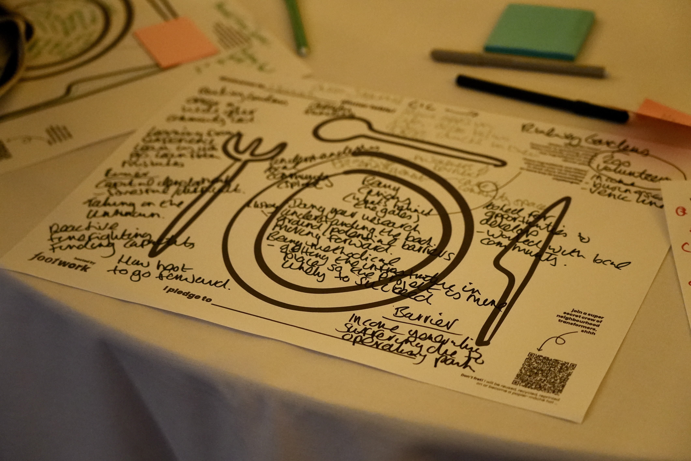

>
>
The Challenge
How do you create a room where community innovators and local authority officers can genuinely learn from each other?
Community innovators doing the difficult work of neighbourhood transformation often struggle to be heard by the institutions whose decisions shape their neighbourhoods. Local authority officers, meanwhile, rarely have the opportunity to sit face-to-face with the communities their policies affect. Not in formal consultation settings, but in genuine dialogue.
Footwork Trust held a workshop at New Local's Stronger Things 2024 — themed "A seat at the table: sharing ingredients for great places." It created the conditions for exactly that. Footwork Trust was invited to host a peer-led workshop within the event, bringing together 17 community innovators from across the UK alongside local authority employees, funders, researchers and changemakers. My role was to co-design and facilitate that workshop with my colleagues.
"Conversations as opposed to consultations."
A pledge made by a local authority officer at the end of the workshopOur Approach
Designing for honest exchange, not performance
The workshop was held in the West Crypt at London's Guildhall, an underground space transformed into eleven tables, each hosted by a community innovator. The design challenge was structural: how do you create conditions where people share with unfiltered honesty, rather than presenting polished versions of their work?
We used a culinary metaphor of "ingredients" as the organising frame. Each table was a dinner table. Each community innovator shared their story: bold ambitions, real hurdles, honest successes. Participants were first invited to identify the ingredients they heard, the conditions that make neighbourhood transformation possible. This framing lowered the stakes and invited genuine reflection rather than formal presentation.
The workshop moved through three structured phases: setting the table (storytelling and ingredient identification), recipe making (small-group brainstorming on shared challenges), and sharing recipes (pledges taken back into participants' own work).


What We Did
Bringing 17 community voices into a room with the people who need to hear them
Our team designed the full workshop structure, from the spatial arrangement of tables to the facilitation prompts, the "dinner plate" brainstorming cards, and the pledge-taking mechanism that closed the session. Each element was designed to move participants from listening mode into genuine dialogue and commitment.
The 17 community innovators came from across the UK: Exeter to Cardiff, Coalville to Bath, Sheffield to Lewisham. Each brought a story of local ingenuity and neighbourhood-level change. My role was to facilitate a table at which those stories could land. Additionally, in which local authority officers and funders could respond, not defensively, but with genuine openness.
A key design decision was placing community innovators and council officers face-to-face at the same table on the challenges they both face. This was not a panel. It was a structured conversation where community innovators often faced difficulties with their local authority. And here they were, in the same room, with officers prepared to listen and respond!


Outcomes & Impact
Ingredients for great places and pledges that left the room with people
The workshop generated a rich set of "ingredients" identified by participants as essential for successful placemaking: inclusive decision-making, strong local networks, continuous learning from local experience, and access to physical assets.
More significantly, it produced concrete pledges and commitments that participants took back into their own work. These were not abstract aspirations but specific behavioural changes, made in writing, in a room of peers who had just modelled what genuine community leadership looks like.
From the room
The result
A workshop that brought community innovators and local authority officers into genuine dialogue. Not consultation, but collaboration. Participants left with pledges, new perspectives, and a direct experience of what it looks like when communities have a real seat at the table.
What I learned
The Stronger Things workshop taught me that the design of a conversation is as important as its content. The culinary metaphor did real work and it made the brainstorming feel generative rather than extractive, giving participants a shared vocabulary that carried through the whole session. That kind of framing is something I now think carefully about in every facilitation context.
It also reinforced something I believe deeply about participatory design: that the most powerful moments happen when you put people who are normally on opposite sides of a table at the same table. The dynamic between community innovators and council officers in that room was genuinely different from anything a consultation process produces. That difference is worth designing for.
If I were doing this again: I would build in more time for the pledge-sharing at the close. The energy in the room at that moment was extraordinary, and we only had time to share a selection. A structure that allowed every table to report back would have amplified the impact significantly.